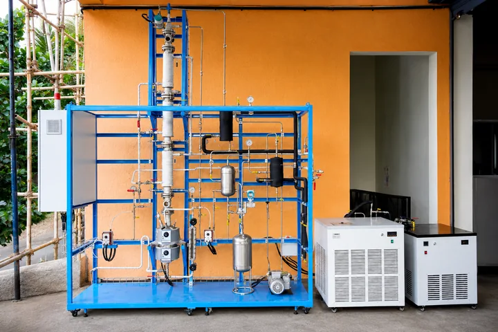
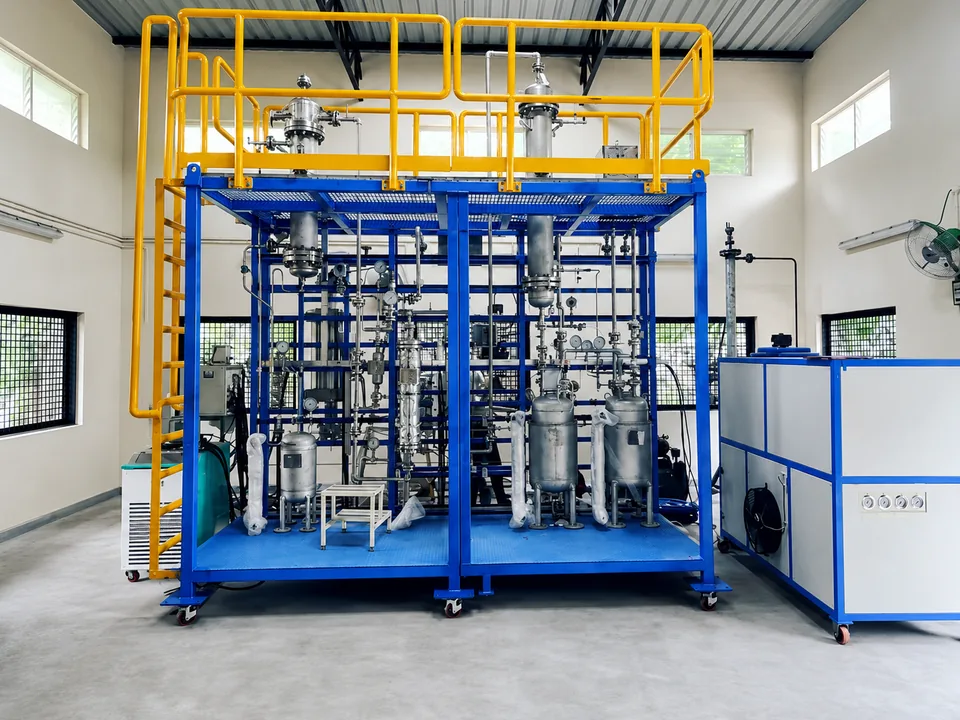
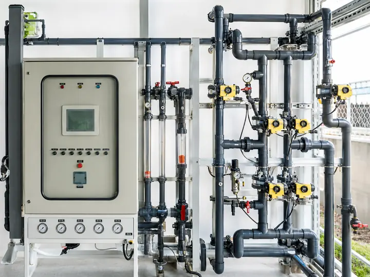
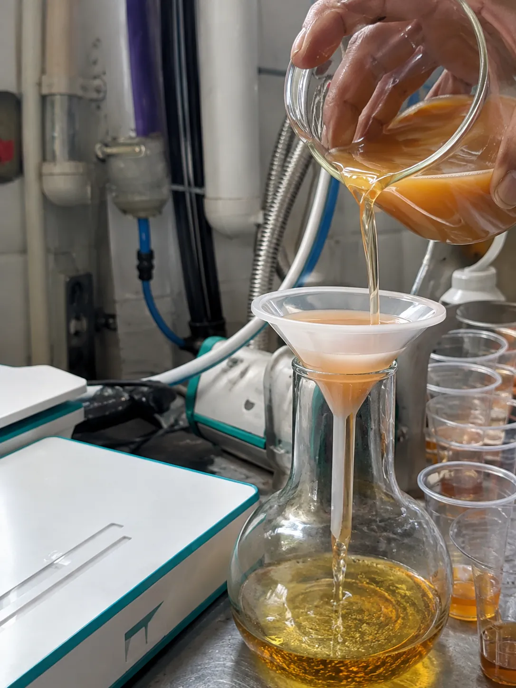

01
Pilot systems and research tools
What needed to be measured, the operating envelope, interfaces and acceptance tests.
A meaningful case study goes beyond a project photograph.
A meaningful case study goes beyond a project photograph. It distinguishes the starting problem, defined scope, interfaces, tests and documented outcome. Client names are withheld; references are available on request.

01 / The engineering context
Each case states which parts of the equipment, controls, instruments and commissioning Instron Technologies delivered, and the result the plant saw.
Explore the scope
02 / Capabilities and context
Scope, interfaces and required evidence are agreed for the specific application.
What needed to be measured, the operating envelope, interfaces and acceptance tests.
How the process basis translated into equipment, utilities, controls and an operable skid.
Control requirements, panels, sequence testing, installation constraints and closeout.
Source systems, operating definitions, reporting workflow and user acceptance.
Featured case studies
Client names are withheld; references are available on request.

01 / Case studyCompleted · Ontario, Canada · Home and personal care
Situation: A new plant needed one operating system for formulation, raw-material addition, mixing, transfers, filling and CIP.
What we did: Process and controls definition, E&I integration, ISA-88-oriented batch control with recipes, HMI and SCADA, FAT, SAT, commissioning, training and handover.
More repeatable batches, consistent dosing, earlier detection of deviations and structured batch records.

02 / Case studyCompleted · Dairy processor
Situation: Pasteurizer trend reports and utility figures were compiled by hand, though the plant already had PLCs, SCADA and instruments.
What we did: PlantON connected to the existing PLC/SCADA and field sensors, with dashboards, reports and alerts for pasteurizers, CIP and utilities.
Compliance reporting 94% faster (from up to 2 hours to about 7 minutes), 12% less chemical and 11% less utility use.
 03 / Case study
03 / Case studyCompleted · Canada · 1,000+ I/O
Situation: A North American cleaning and personal-care brand needed more output from its compounding area.
What we did: Automated compounding with 26 VFDs and 4 agitators, ISA-88 recipe management, a paperless audit trail and IoT monitoring.
20% more production capacity, 15% lower energy and material use and 10% lower CO₂ emissions.
“Battery-recycling pilot skid with SCADA real-time monitoring.”
Senior Research Scientist · R&D University, Middle East
“Alloy-wheel paint shop: PlantON and sensors for real-time monitoring and traceability.”
Plant Head · Automotive
“Fully automated CSTR with PlantON IoT, pharma units in India and Australia.”
General Manager · Pharma
“13-machine IIoT data consolidation, daily MIS and shop-floor display.”
VP · Die Casting
03 / Delivery logic
04 / Start the conversation
A scoped first review is more useful when existing information, unknowns and the next approval decision are identified.
Prepare a technical enquiryLet's grow together
Toronto: +1 (647) 874-3958
Pune: +91 70280 15958
Toronto, Ontario, Canada
Pune, Maharashtra, India